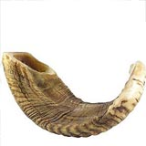
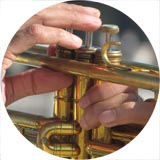
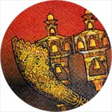
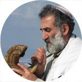
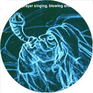
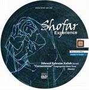

Все статьи и видео о ШОФАРЕ / праздник РОШ а-ШАНА /
Рош-а-Шана - праздник, в центре которого музыкальный инструмент. Один из глубочайших еврейских библейских символов. Шофар — единственный в своем роде! Нет другого такого музыкального инструмента, который на протяжении всей своей длительной истории, ок. пяти тысяч лет, не притерпел бы абсолютно никаких изменений!
ПЛЕЙ ЛИСТЫ (списки видео по теме "Шофар")
ШОФАР | Исполнение заповеди трубления ШОФАР | Символика трубления ЕВРЕЙСКИЕ (Библейские) ПРАЗДНИКИ ШОФАР | ПОКЛОНЕНИЕ ИЗРАИЛЯ
Фрагмент саундтрека с торжественного собрания праздника Рош а-Шана (Праздник труб). Мессианская синагога "Возвращенные на Сион" 2009г. Древняя еврейская молитва из Пс. 62:2-3. Молитва и шофар Эд.Эфраим Калиш. Клавиши: Даниэль Круглов

Шофар — единственный в своем роде!Шофар — единственный в своем роде! Нет другого такого музыкального инструмента, который на протяжении всей своей длительной истории, ок. пяти тысяч лет, не притерпел бы абсолютно никаких изменений!
 ШОФАР НАД АРМЕНИЕЙ | Зара Ованнисян Мне очень хотелось, чтобы звук шофара звучал в церкви. Водительством для нас было пророческое слово из пророка Иеремии 51:27: «Поднимите знамя на земле, трубите шофаром среди народов, вооружите против него народы, созовите на него царства Араратские...
ШОФАР НАД АРМЕНИЕЙ | Зара Ованнисян Мне очень хотелось, чтобы звук шофара звучал в церкви. Водительством для нас было пророческое слово из пророка Иеремии 51:27: «Поднимите знамя на земле, трубите шофаром среди народов, вооружите против него народы, созовите на него царства Араратские...
Это именно воспоминание и размышление (по заповеди Господней) о великом Гласе Шофара у горы Синайской и о последней Трубе, которой вострубит Всевышний в конце времен. Автор удивительно тонко почувствовал и смог выразить через музыку трепет и реакцию сердца человека, воспоминание великого трубления...
м
Когда загремит ШОФАР – СЛУШАЙТЕ !
Пророк обращается ко всем концам вселенной и к каждому народу, и человеку. Контекст этого пророчества говорит о судах Божьих и восстановлении Израиля в последние времена.
Шофар предстает здесь великим символом и действием для всех живущих на земле. м
МОЖЕТ ли женщина трубить В ШОФАР?
Периодически то тут, то там возникает вопрос, может ли женщина … трубить в шофар? То, что она на это способна – это не вопрос (женщины, на мой взгляд, могут делать это лучше многих из нас… ТРУБЛЕНИЕ ШОФАРА. Исполнение заповеди
ТРУБЛЕНИЕ ШОФАРА. Исполнение заповеди говорит нам о том, как именно Израиль должен трубить в Шофар. Изучая мнения и комментарии наших мудрецов, я обращаюсь к еврейской традиции в этом вопросе.

ШОФАР или ТРУБА? ПРОВЕРИМ?ШОФАР или ТРУБА? Проверим, что говорит текст Писания? В соответствии с Синодальным переводом — Праздник Труб. А как говорит оригинал?

ГОЛОС ШОФАРА ч.1. ВЫСОКОЕ предназначениеЭтот мидраш посвящен одному из важнейших символов в еврейской традиции — шофару. Над шофаром не властно время. Этот инструмент, не утратив актуальности, и до сего дня сохраняет своё высокое предназначение.
ГОЛОС ШОФАРА ч.2. ПРИЗВАНИЕ Рог жертвенного животного имеет три имени. Каждое из них несет в себе особое послание от Всевышнего. Каждое — несет в себе особенное совершенное действие. Мы говорили об этом в предыдущей части «Высокое предназначение».

ГОЛОС ШОФАРА ч.3. ВоспоминаниеВпервые звук шофара наши отцы услышали в Синайской пустыне три с половиной тысячи лет назад. С тех пор этот звук сопровождает Израиля повсюду. «Вспомни дни древние, помысли о летах прежних родов; спроси отца твоего, и он возвестит..."
ГОЛОС ШОФАРА ч.4. ЮБИЛЕЙ
Имя «шофар – йовель» несет в себе идею освобождения, обещанного Господом. « … в день очищения вострубите шофаром по всей земле вашей; и освятите пятидесятый год и объявите свободу на земле всем жителям ее: да будет это юбилей".

ГОЛОС ШОФАРА ч.5. Израиль — шофар в руках ТворцаИзраиль — шофар в руках Творца. В предыдущих частях мы говорили о трех именах шофара. Каждое имя несет в себе определенное пророческое действие. Каждое из них, призыв к знающему и слушающему Голос Шофара.
ШАВУОТ — Праздник ДАРОВАНИЯ СВОБОДЫ
Синайское откровение глазами художника. ДЕКЛАРАЦИЯ СВОБОДЫ. «Я видел предел всякого совершенства, [но] Твое повеление безмерно"...
ПОНИМАТЬ язык Библии. ЗРИ В КОРЕНЬ
Не секрет, что любой перевод, каким бы качественным и помазанным он ни был, не в состоянии передать всю глубину и многозначность оригинального текста. Мы увидим в частности, что обращаясь к ивритскому оригиналу, мы обнаружим исчезнувший со страниц переводов шофар.
ПОДБОРКА ВИДЕО ПО ТЕМЕ "ШОФАР"
 Голос Шофара.
Голос Шофара.
Этот часовой фильм, созданный Эфраимом Калишем, рассматривает разные имена шофара, каждое из которых несет в себе совершенное действие. За каждым скрывается тайна и глубочайшее откровение.
Звуки шофара. Трепет и пророчество
Звуки шофара. ШВАРИМ - сокрушен сердцем
Звуки шофара. ТКИА - пронзая до глубины
 Жертвоприношение Исаака. Голос Шофара /AKIDA/
Жертвоприношение Исаака. Голос Шофара /AKIDA/
Согласно еврейской традиции шофар берет свое начало в испытании Авраама, о котором повествует Тора. Эта история, читаемая в синагогах на рош а-шана, называется АКИДА. От рога, принесенного в жертву барана ведет свою историю шофара, которым Всевышний повелел нам трубить в роды наши. Этот ролик - фрагмент полнометражного фильма "Голос Шоафара".
 Фрагмент саундтрека с торжественного собрания праздника Рош а-Шана (Праздник труб). Мессианская синагога "Возвращенные на Сион" 2009г. Древняя еврейская молитва из Пс. 62:2-3.
Фрагмент саундтрека с торжественного собрания праздника Рош а-Шана (Праздник труб). Мессианская синагога "Возвращенные на Сион" 2009г. Древняя еврейская молитва из Пс. 62:2-3.
Молитва и шофар Эд.Эфраим Калиш Голос Шофара. Синтзатор: Даниэль Круглов
 Шофар. Исайя 40:3
Шофар. Исайя 40:3
"Глас вопиющего в пустыне: приготовьте путь Господу, прямыми сделайте в степи стези Богу нашему". Этот призыв актуален по сей день. И сегодня шофар взывает к каждому из нас.
 СЛУШАЙ ИЗРАИЛЬ!
СЛУШАЙ ИЗРАИЛЬ!
СЛУШАЙ ИЗРАИЛЬ! - обращение Творца к Своему народу. Необходимость СЛУШАТЬ Бог подчеркивает неоднократно в Библии, быть внимательным ко всякому слову исходящему из Его уст.
Этот ролик - фрагмент полнометражного фильма "Голос Шоафара".
 Праздник воспоминания звука ШОФАРА
Праздник воспоминания звука ШОФАРА
Голос Шофара - звучит во всех городах и синагогах мира, где рассеяны евреи. Праздник Трубления Шофара (синод. - пр.Труб) - время трубить в шофар.

Шофар + молитва на иврите + импровизации музыкантовМолитва на иврите, трубление импровизации на шофаре вместе с с музыкантами общины "Краеугольный Камень" г. Казань.
 Шофар - свидетель истории
Шофар - свидетель истории
Интересный док. фильм об истории и значении шофара.

Еврейская молитва, трубление шофара и музыкальная импровизация - это часть празднования на Рош-а-Шана в кругу друзей художников.
Концерт для ШОФАРа, тромбона и оркестра Меира Варшауэр
ПЛЕЙ ЛИСТЫ (списки видео по теме "Шофар")
ШОФАР | Исполнение заповеди трубления ШОФАР | Символика трубления ЕВРЕЙСКИЕ (Библейские) ПРАЗДНИКИ ШОФАР | ПОКЛОНЕНИЕ ИЗРАИЛЯ